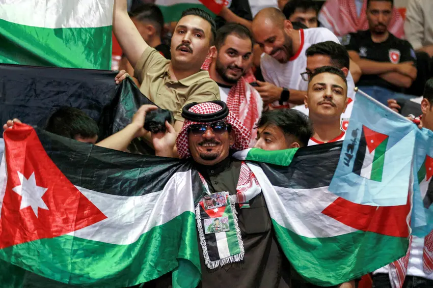
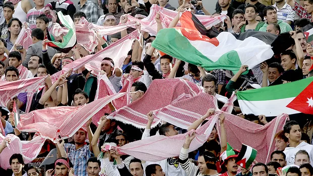

Jordânia
A seleção da Jordânia teve uma participação histórica ao conquistar sua primeira classificação para a Copa do Mundo, representando um grande marco para o futebol do país. Conhecida por sua evolução no cenário asiático, a Jordânia vem investindo no desenvolvimento esportivo e conquistando resultados importantes em competições continentais. Sua presença no torneio demonstra o crescimento do futebol jordaniano e simboliza um momento de orgulho nacional, além de inspirar novos atletas no país. Mesmo enfrentando seleções tradicionais, a Jordânia busca mostrar competitividade, organização e determinação dentro de campo.
Seleção
HISTÓRIA
A melhor Copa
do Mundo
Jordânia
As melhores campanhas da Jordânia no futebol aconteceram principalmente na Copa da Ásia AFC, já que o país nunca havia disputado uma Copa do Mundo até garantir vaga para 2026. O maior momento da seleção jordaniana foi em 2023 (disputada em 2024), quando alcançou a final da Copa da Ásia pela primeira vez na história, terminando como vice-campeã após perder para o Catar por 3 a 1.
2011
Quando a Jordânia chegou às quartas de final da Copa da Ásia, sendo uma das melhores campanhas do país até então.
2019
A seleção voltou a se destacar ao liderar um grupo difícil, vencendo a Austrália na estreia, mas acabou eliminada nas oitavas de final nos pênaltis para o Vietnã.


Momentos inesquecíveis
01
A Jordânia chegou pela primeira vez à final continental, algo inédito para o país, tornando-se vice-campeã.
02
A Jordânia surpreendeu ao vencer uma das seleções mais fortes da Ásia por 2 a 0, garantindo vaga inédita na final.
03
Foi uma das primeiras grandes campanhas internacionais da seleção, mostrando crescimento no futebol asiático.
04
A Jordânia venceu por 1 a 0 uma seleção tradicional e terminou líder do grupo, surpreendendo muita gente.
Detalhes
culturais do país